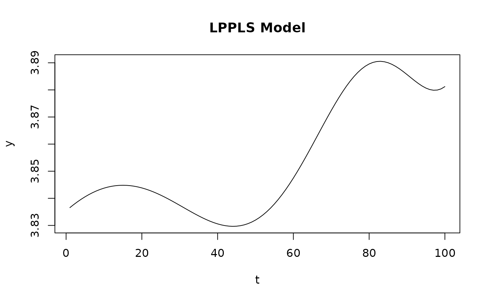

Computes the LPPLS model value for given parameters and time points. The model describes the log-price dynamics of financial assets near critical points (bubbles/crashes).
Usage
eval_lppls(
t,
A,
B,
C1,
C2,
tc,
m,
omega,
mode = 0,
T1 = 500,
T2 = 1990,
omega2 = 0,
omega3 = 0
)Arguments
- t
Numeric vector of time indices.
- A
Numeric scalar, the log-price at critical time.
- B
Numeric scalar, the amplitude of power law growth (typically negative for bubbles).
- C1
Numeric scalar, amplitude of cosine oscillation.
- C2
Numeric scalar, amplitude of sine oscillation.
- tc
Numeric scalar, the critical time (singularity point).
- m
Numeric scalar, the power law exponent (typically 0.1 to 0.9).
- omega
Numeric scalar, the log-periodic frequency (typically 6 to 13).
- mode
Integer, the model variant:
0: Filimonov formulation (default)
1: First order expansion (Johansen 1999, eq. 19)
2: Second order expansion (Johansen 1999, eq. 20)
3: Third order expansion (Johansen 1999, eq. 22)
- T1
Numeric scalar, scale parameter for mode 2 and 3 (default 500).
- T2
Numeric scalar, scale parameter for mode 3 (default 1990).
- omega2
Numeric scalar, secondary frequency for mode 2 and 3 (default 0).
- omega3
Numeric scalar, tertiary frequency for mode 3 (default 0).
Details
The standard LPPLS model (mode = 0) is: $$LPPLS(t) = A + (t_c - t)^m [B + C_1 \cos(\omega \log(t_c - t)) + C_2 \sin(\omega \log(t_c - t))]$$
This model captures both the power law growth towards a critical time and the log-periodic oscillations that are characteristic of speculative bubbles.
References
Filimonov, V., & Sornette, D. (2013). A stable and robust calibration scheme of the log-periodic power law model. Physica A: Statistical Mechanics and its Applications.
Johansen, A. (1999). Predicting Financial Crashes Using Discrete Scale Invariance. Journal of Risk.
Examples
# Generate time series
t <- 1:100
# Generate LPPLS curve with known parameters
params <- list(A = 4, B = -0.015, C1 = 0.0015, C2 = 0.001,
tc = 150, m = 0.5, omega = 9)
y <- eval_lppls(t, params$A, params$B, params$C1, params$C2,
params$tc, params$m, params$omega)
# Plot the result
plot(t, y, type = "l", main = "LPPLS Model")
